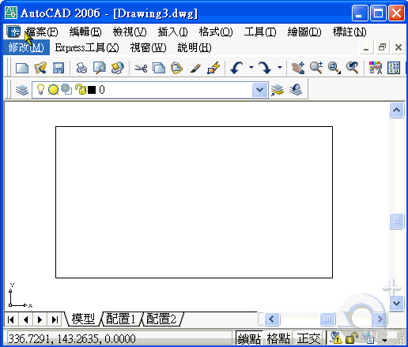

AutoCAD 並沒有反白列印的選項，需靠 出圖型式(*.ctb)的明亮度 才會有反白的效果。
以下方法為 一般方式 提供給你參考，有問題請再提~
當然，也可使用 進階技巧方式 更方便，不過有點小複雜有興趣再提!
※※※ AutoCAD 2000 以上版本 ※※※
1.新增圖層1 → 顏色為 255 色。新增圖層2 → 顏色為 紅色。
2.使用 HATCH 指令 → 填實版面區域(圖層2) → 使用圖層1寫文字或劃線。
3.PLOT 指令 → 出圖型式表編輯
4.將 出圖型式 顏色255 → 明亮度 由 100 改為 1 → 儲存並關閉
5.完成出圖步驟 → 預覽無誤後即可確定出圖。
※動態操作步驟如下:有問題請再提※

註：如果需要出圖PDF黑底，模型空間設置黑色背景，再建立HATCH黑色(0,0,0)為底，使用acad.ctb出圖彩色線稿即可。
👇延伸其他作法，詳介請參考出圖大師課程：
👇出圖大師課程